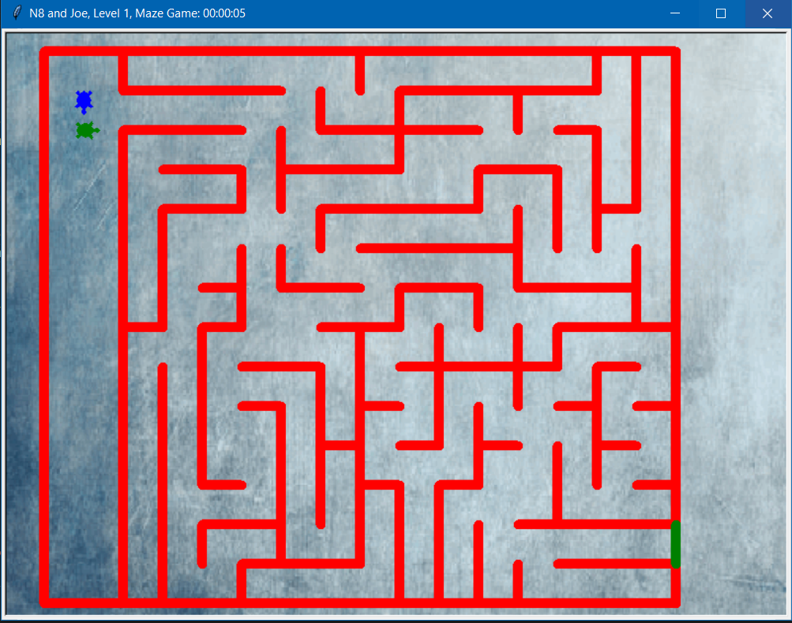

1.1.9 Project
The Fish Aquarium is a simulation that has 3 moving fish and otheraquatic sea life, with moving bubbles, simulating a aquarium
1.2.5 Project
2 Player Turtle Maze game that allows 2 players to control turtles and race through a set of mazes. But if a player touches a lazer wall, they get sent back to the beginning of that level.
Scratch Project
3 Player steeplechase game where all 3 players need to race to the end while trying to stay on their horse. If a player accidentally hits a hurdle, they lose. Players must also be carefull to not go too slow or their player would be eaten by a cat /ᐠ-ꞈ-ᐟ\. Meow
2.1.6 Project
Fishtank security was the main goal of our project so we looked fot the errors and fixed them.
3.1.6 Project

In this project we utilized our knowledge of sorting data to be able to eliminate possible options of different climates our rover might be in. The object of this project was to identify where our rover was based on different climate factors like the sun, the wind, noise within the climate, and the temperature throughout the day. We originally recieved a spreadsheet of data to sort and graph, and then we compared it to our predictions of each climate. After we narrowed it down, we settled on a specific climate, which is Inland Forest. The factors were most similar to our predictions and actual data.
3.2.4 Project

In this project we graphed and sorted data given by the United States Department of Agriculture. We were given data on the production of honey for each state and sorted it based on if the state was in the lower 1/3 quartile of production, 2/3 quartile, or last 1/3 section. We then made a bar graph of the honey data per year.
4.1.4 Project

In this project we analyzed the pepper moth pollution simulation. The peppered moth simulation is modeling the incident that happened in 1800's England. The pollution from the coal had discolored the trees which caused a mutation in the peppered moths to survive. A suggestion that we have is to add predators to the simulation.